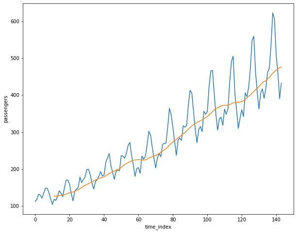
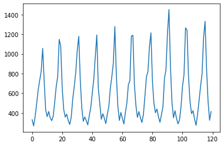
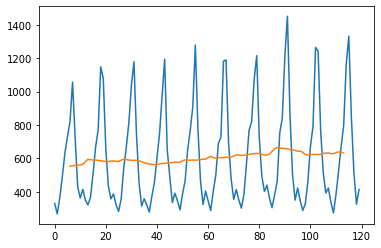

時系列データ入門¶
参考書籍¶
[5]:
%matplotlib inline
import warnings
warnings.simplefilter('ignore')
import seaborn as sns
import matplotlib.pyplot as plt
import numpy as np
import pandas as pd
[20]:
month_map = {'Jan': 1,
'Feb': 2,
'Mar': 3,
'Apr': 4,
'May': 5,
'Jun': 6,
'Jul': 7,
'Aug': 8,
'Sep': 9,
'Oct': 10,
'Nov': 11,
'Dec': 12}
[27]:
df = sns.load_dataset('flights')
df['month_num'] = df.month.map(month_map)
df = df.sort_values(['year', 'month_num']).reset_index()
df.rename(columns={'index': 'time_index'}, inplace=True)
[38]:
fig, ax = plt.subplots(figsize=(10,8))
sns.lineplot(x='time_index', y='passengers', data=df, ax=ax)
df['passengers'].rolling(12).mean().plot(ax=ax)
[38]:
<matplotlib.axes._subplots.AxesSubplot at 0x11bc36650>

中心化移動平均¶
[16]:
df_ice = pd.read_csv("https://oku.edu.mie-u.ac.jp/~okumura/stat/data/icecream.csv",
encoding="CP932",
header=1
)
df_ice.rename(columns={'年': 'year', '月': 'month', 'アイスクリーム': 'expenditure_yen'}, inplace=True)
[19]:
df_ice.expenditure_yen.plot()
[19]:
<matplotlib.axes._subplots.AxesSubplot at 0x11e5d9650>

[21]:
df_ma = df_ice.expenditure_yen.rolling(window=12).mean().shift(-6)
df_cma = df_ma.rolling(window=2).mean()
[26]:
df_ice.expenditure_yen.plot()
df_cma.plot()
# 中心化移動平均はオレンジ
[26]:
<matplotlib.axes._subplots.AxesSubplot at 0x11e96aa50>

季節調整¶
[ ]: